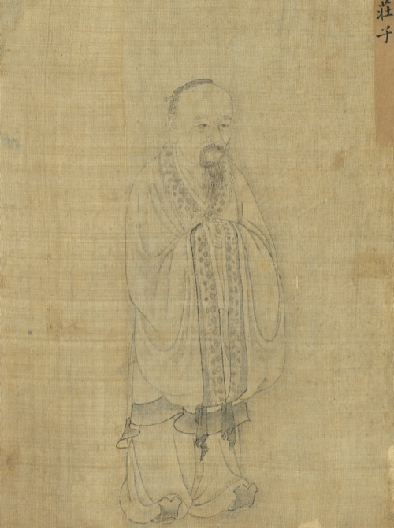
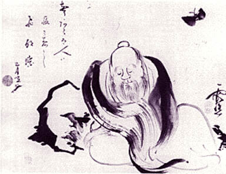
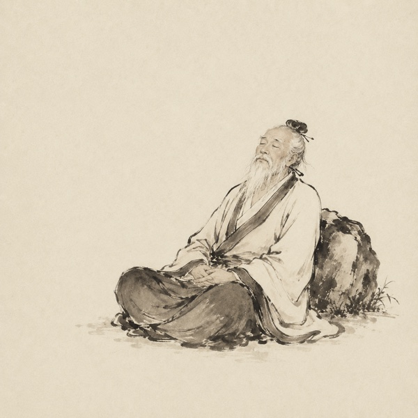
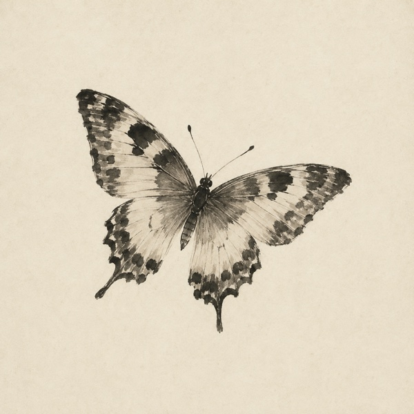
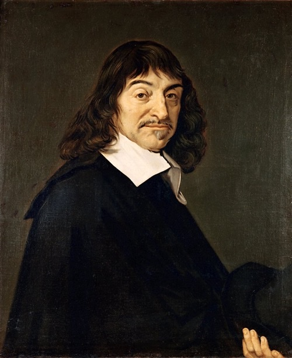
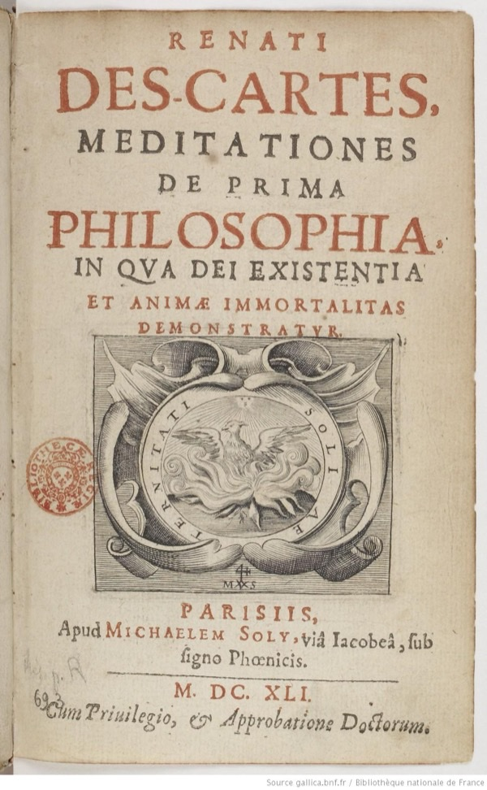

思考実験・哲学
紀元前300年頃、ひとりの思想家が昼寝から目を覚ました。蝶になった夢を見ていた——だが、いま人間の姿でいる自分のほうが、蝶の見ている夢なのかもしれない。この短い寓話は、2300年後の今も哲学者を悩ませ続けている。
荘子(荘周)が『荘子』斉物論篇で「胡蝶の夢」を記述。
同時代、アレクサンドロス大王の帝国が分裂しヘレニズム世界が形成。ギリシアではアリストテレスが没し、インドではマウリヤ朝が勢力を拡大していた。
原文はわずか46字。世界の哲学文献のなかで最も短い「問い」のひとつが、最も長く議論され続けている。
夢のなかで、あなたは空を飛んでいた。風が頬を撫で、地上がはるか下に見えた。あまりにもリアルで、飛ぶという行為が自分の身体の延長のように感じられた。——そして目が覚めた。
目覚めた瞬間、あの飛翔の感覚はまだ残っている。布団に横たわっている自分の身体が、ほんの少しだけ異物のように思えた。「今こうしているほう」が本当の自分だという確信は、いったいどこから来ているのだろう。
その不思議な一瞬を、2300年前に哲学にした人物がいる。
「現実」と「夢」を隔てる壁は、思ったほど頑丈ではないかもしれない。2300年前の短い寓話と、それに対する東西の哲学者たちの応答を辿りながら、自分の「覚醒」を、あなたの手元で疑ってみる。
紀元前4世紀。中国はいわゆる戦国時代戦国時代(前403年頃〜前221年)
周王朝の権威が失墜し、秦・楚・斉・燕・趙・魏・韓の七国が覇権を争った約200年間。諸子百家と呼ばれる多数の思想家が活躍した時代でもある。のまっただなかにあった。七つの国が絶え間なく戦い、下克上が日常で、思想家たちは君主に仕えて名声を得ることに腐心していた。そんな時代に、宋の国の蒙(現在の河南省商丘市付近)に、漆園漆園(しつえん)
漆(うるし)の木を管理・採取する施設。漆は当時の中国で家具・武器・棺などの塗装に使われる重要な資源だった。荘子はここで下級の管理役人を務めていたとされる。の小役人を務める男がいた。荘周——のちに「荘子」と呼ばれることになる人物だ。

荘子(荘周)
紀元前369年頃〜前286年頃
中国戦国時代の思想家。老子とともに道家の祖とされ、「老荘」と併称される。楚の威王から宰相の地位を提示されたが辞退し、泥の中で尾を振る亀のほうが幸福だと応じたという逸話が残る。寓話と比喩を駆使した独自の文体で、中国文学史においても高い評価を受ける。
肖像: 『聖君賢臣全身像冊』所収 / Public Domain
荘子は権力や名声にまったく関心がなかった。『史記』によれば、楚の威王が使者を送って宰相の地位を与えようとしたとき、荘子は「あなたは国の祭祀祭祀(さいし)
国家が行う公式の祭り・儀式。古代中国では天や祖先への祭祀が統治の根幹であり、犠牲として牛や亀が供えられた。祭祀に使われる動物は錦で飾られたが、最終的には殺される。で殺されて錦の布に包まれる亀と、泥の中で尾を引きずって生きている亀と、どちらがいいと思うか」と問い返したという。使者が「泥のほうがいい」と答えると、荘子は「帰ってくれ。私はここで泥のなかにいる」と言った。
そんな荘子が書いた——あるいは弟子たちが彼の思想をまとめた——書物が『荘子』だ。全33篇のうち、内篇7篇のみが荘子本人の手によるものとされている。寓話、パラドックス、対話、夢の記録が入り混じるこの奇妙な書物の第2篇「斉物論斉物論(せいぶつろん)
『荘子』内篇の第二篇。「物を斉(ひと)しくする議論」の意。あらゆる区別や対立は人間が勝手に作ったものであり、道の視点から見ればすべては等しい、と説く。」の末尾に、世界でもっとも有名な夢の話がある。
昔者莊周夢爲胡蝶。栩栩然胡蝶也。自喩適志與。不知周也。俄然覺、則蘧蘧然周也。不知、周之夢爲胡蝶與、胡蝶之夢爲周與。周與胡蝶、則必有分矣。此之謂物化。
いつだったか、私こと荘周は夢のなかで蝶になった。ひらひらと喜々として、まさに蝶そのものだった。楽しくて心ゆくばかりで、自分が荘周であることは頭になかった。はっと目が覚めると、まぎれもなく自分は荘周だった。——はて、荘周が夢で蝶になっていたのか。それとも蝶が夢で荘周になっているのか。荘周と蝶とには、たしかに形のうえでは区別があるはずだ。これを「物化」という。
——『荘子』斉物論篇(紀元前300年頃)
この寓話の最後の二文字「物化物化(ぶっか)
万物が絶えず変化し、あるものが別のものへと移行すること。単なる「変化」ではなく、変化の前後で「自己」が途切れない——蝶であるときも荘周であるときも、それぞれに完全である——という含意を持つ。」に、荘子の思想の核心がある。「物化」は単なる「変化」を指す言葉ではない。万物は絶えず姿を変える——蝶が人間になり、人間が蝶になり、生が死に移り、死がまた別の生に変わる。だがその変化のどの時点でも、「そのとき・その姿」として存在は完全だ、ということだ。蝶であるときの荘周は、不完全な荘周ではない。蝶として完璧に在った。これが、荘子の寓話が単なる「夢と現実の区別がつかない」という話で終わらない理由である。
たったこれだけの文章が、西洋と東洋の哲学者たちに2300年にわたって問いを投げ続けている。この寓話を初めて読んだとき、多くの人はまず「夢と現実の区別がつかない」という懐疑論として理解する。だが、荘子が最後に「物化」という言葉で締めたことの意味は、ここまで読めばわかるはずだ。彼の関心は「区別がつかない」ことへの不安ではなく、「区別に縛られない」ことの自由にあった。
誤解
荘子は「夢と現実の区別はつかない」と言っている
実際は
原文は「周と蝶とには必ず分(区別)がある」と明言している。区別はある——だがその区別は、私たちが思うほど絶対的ではない、という話。
誤解
単なる「リアルな夢を見た」というエピソード
実際は
斉物論篇全体の結論部にあたる。「あらゆる区別は相対的だ」という万物斉同の思想を、もっとも凝縮された形で表現した寓話。
誤解
デカルトの夢の議論(方法序説)と同じことを言っている
実際は
デカルトは「確実な知識」を求めて懐疑から出発した。荘子は確実性を求めていない。むしろ「どちらでもいい」という受容の哲学に向かっている。目的が正反対。

荘周夢蝶図——岩に寄りかかって眠る荘子のそばを蝶が舞う。18世紀の水墨画
この寓話は、読むだけで終わらせるには惜しい。荘子が投げかけた問いを、二段階に分けて手元で再現してみてほしい。前半は「視点」を反転させる体験、後半は「現実を確認する手段」が原理的に成立するかを試す段階だ。どちらも結論は出ない。だが結論の出ない問いを、読者の手元で動かせる形にすることで、はじめて見えてくるものがある。
あなたは、いま——どちらだろう?


どちらかを選んだあと、もう一方も試してみよう。3回ほど行き来すると、何かが起こる。
どちらを選んでも、選ばなかった側は自動的に「夢」になる。視点を反転させればまた裏返る。確定する根拠は、内側からは原理的に持てない。
荘子は「どちらが本物か」を解決しなかった。蝶として在る瞬間も、荘周として在る瞬間も、そのときそれぞれに完全だ——それが「物化」の核心である。原文は「周と蝶とには必ず分(区別)がある」とはっきり書いている。区別はある。だが、区別に固執しない。これが東洋哲学が辿った道筋である。
いま視覚的に体験したのは、東洋哲学が辿った道筋だ。「どちらが本物か」を確定させない態度。だが西洋哲学は、ここから別の道を歩んだ。デカルトに代表される西洋的な懐疑は、「本物を確定する手段」を執拗に探し続ける。次の段階で、その懐疑をあなた自身が試してみてほしい。
あなたは今、本当に起きていますか?
「夢ではない」と確かめる方法を、3つ順に試してみよう。それぞれをクリックすると、夢の側からの応答が返ってくる。
つねってみる
痛ければ現実、と思いがちだが——
夢からの応答
夢のなかでも痛みは生じる。レム睡眠中の脳活動は、痛覚に関わる領域を含めて覚醒時に近い領域が発火することが知られている。「夢で殴られて痛かった」「悪夢で胸が苦しかった」——心当たりがある人は多いはずだ。痛みは、現実性の判定基準にならない。
隣にいる人に「これは夢じゃないよね?」と聞く
他人がうなずけば確かか?
夢からの応答
夢のなかの他人も、整合的にうなずく。「うん、現実だよ」と笑って答える夢を、私たちは何度も見てきた。夢の中の人物は、夢の論理に従って「本物らしく」振る舞う。他者に確認を求めても、その他者がそもそも夢の住人なら、応答は判定の根拠にならない。
記憶の連続性を辿る
昨日からの記憶があれば現実か?
夢からの応答
夢のなかでは、その夢限定の偽の記憶を持って登場する。「いつもの場所」「久しぶりに会う知人」「思い出せない理由でここにいる」——これらは夢の冒頭で生成される。覚醒してはじめて「あの記憶は夢のなかで作られたものだった」と気づく。記憶の連続性自体が、夢の中で偽造されうる。
3つすべてが破綻した先で
外側からの確認手段は、原理的にない。夢の中にいるときに「これは夢だ」と確定する方法は存在しない——逆に、覚醒しているときに「これは現実だ」と完全に証明する方法もない。
西洋哲学はここから「ならば確実なものを再構築せよ」(デカルト)へ向かい、荘子は「ならば確認を手放してよい」(物化)へ向かった。出発点は同じ、行き先が正反対。あなたは、どちらに引かれるだろうか。
胡蝶の夢と似た問いは、西洋哲学にもある。代表的なのがルネ・デカルトの夢の議論だ。1641年、デカルトは『省察』のなかで「夢と覚醒を明確に区別する指標は存在しない」と書いた。しかし、デカルトと荘子では、問いの行き先がまったく違う。

ルネ・デカルト
René Descartes (1596–1650)
フランスの哲学者・数学者。「我思う、ゆえに我あり」で知られる近代哲学の祖。1641年の『省察』で、夢と覚醒を区別する確実な指標がないことを論じた上で、「疑っている自分の存在は疑えない」という確実性に到達し、知識を再建する道を選んだ。荘子と独立に同じ問いに行き当たったが、向かった方向は正反対だった。
肖像: Frans Hals 派 (1649年) / Louvre Museum 蔵 / Public Domain
| 荘子(紀元前300年頃) | デカルト(1641年) | |
|---|---|---|
| 出発点 | 蝶になった楽しい夢を見た | 感覚はすべて疑わしいかもしれない |
| 問いの核心 | 蝶と人間の区別は絶対か | 確実に知りうることは何か |
| 結論 | 区別はある。だが固執しなくてよい(物化) | 「我思う、ゆえに我あり」——思考する自己だけは確実 |
| 目的 | 区別からの自由(逍遥遊) | 確実な知識の基盤の構築 |
| トーン | 文学的・寓話的 | 論理的・体系的 |

『省察』第1版(1641年、パリ刊)Bibliothèque nationale de France 蔵 / Public Domain
デカルトにとって、夢の懐疑は出発点にすぎなかった。彼はそこから「我思う、ゆえに我あり(Cogito, ergo sumCogito, ergo sum
デカルトの命題。あらゆることを疑っても、「疑っている自分が存在する」ことは疑えない、という論証。近代哲学の出発点とされる。)」という確実性を見出し、知識の体系を再建しようとした。いわば夢の不安を「解決」しようとしたのだ。先ほどの体験2で読者が試した「3つの確認手段」は、まさにデカルトが歩いたのと同じ道筋である。デカルトはそれをもっと徹底し、悪意ある霊が世界を偽造している可能性まで疑った。そして、疑えないものを一つだけ見つけた——疑っている自分の存在だけは、疑うことができない、と。
一方、荘子は問いを「解決」しなかった。蝶であるときの楽しさは本物であり、荘周であるときの存在感も本物である。どちらが真でどちらが偽かを決める必要はない。両方を受け容れる——この態度を荘子は「逍遥遊逍遥遊(しょうようゆう)
『荘子』内篇の第一篇のタイトル。何ものにも束縛されない絶対自由の境地。大鵬が風に乗って九万里を翔ぶ寓話で始まる。」と呼んだ。目的意識や区別に縛られない、自由な境地のことだ。
「物化」を理解する3つの層
もっとも直感的な読みだ。「夢のなかにいるとき、それが夢だとは気づかない。ならば今この覚醒も、じつは夢かもしれない」——この懐疑は西洋哲学のデカルトやバートランド・ラッセルの議論と重なる。
胡蝶の夢は斉物論篇の末尾に置かれている。この篇全体が「是非、善悪、大小、美醜——あらゆる区別は視点によって変わる」と論じてきた。蝶と人間の区別も、その帰結だ。区別は存在する。だが絶対ではない。
「物化」は単なる「変化」ではない。万物は絶えず姿を変えるが、その変化のなかに「自分」は常に在る。蝶であるときは蝶として完全であり、荘周であるときは荘周として完全だ。どちらかに固執せず、変化そのものに身を委ねること。それが荘子の到達した境地であり、道の思想の核心にある。
紀元前300年頃
荘子『斉物論篇』
「胡蝶の夢」が記される。戦国時代の中国で、万物斉同の思想を凝縮した46字の寓話として。
3世紀
郭象の注釈
西晋の郭象が『荘子』を刪定・注釈。現行の33篇体制はこの時に成立した。胡蝶の夢の「物化」を存在論的に解釈した最初期の注釈のひとつ。
8世紀
唐代の受容
道教が国教とされた唐代、荘子は「南華真人」の敬称を与えられる。李白・杜甫の詩に胡蝶の夢への言及が現れ、文学的モチーフとして定着。
1641
デカルト『省察』
「夢と覚醒を区別する確実な指標はない」と記述。荘子とは独立に同じ問いに到達したが、「我思う、ゆえに我あり」という確実性へ向かった点で方向が異なる。
1889
ジェイムズ・レッグの英訳
英国のスコットランド人宣教師レッグが『荘子』を英訳。胡蝶の夢が西洋の読者に広く知られるきっかけになった。
1967
ボルヘスのハーバード講義
アルゼンチンの作家ボルヘスがハーバード大学の講義で胡蝶の夢に言及。「もし荘子が虎になった夢を見ていたら、何の意味もなかっただろう」と蝶の選択を称えた。
2003
ニック・ボストロム「シミュレーション仮説」
哲学者ボストロムが「私たちはコンピュータ・シミュレーションの中に生きている可能性がある」と論じた。2300年前の荘子の問いが、テクノロジーの言葉で再浮上した。
ボルヘスが1967年のハーバード大学での講義で指摘したことは、文学的にも哲学的にもきわめて重要だ。荘子が夢のなかでなったのが虎でもタイピストでも鯨でもなく、蝶であったことに、この寓話の力がある。蝶はひらひらと儚く、実体がつかめない。もし私たちの人生が夢であるなら、それを暗示するのに蝶ほどふさわしい生き物はいない。
"A butterfly has something delicate and evanescent about it. If we are dreams, the true way to suggest this is with a butterfly and not a tiger."
「蝶には繊細で、儚い何かがある。もし私たちが夢であるなら、それを示唆するまっとうな方法は、虎ではなく蝶を使うことだろう。」
——ホルヘ・ルイス・ボルヘス(ハーバード大学講義『詩という仕事について』1967年)
だが荘子自身の関心は、もっと先にあった。蝶であることが儚いのではない。荘周であることもまた、同じように一時的な姿にすぎない。万物は絶えず変化し、あるものは別のものになる。重要なのは、その変化を恐れず、それぞれの姿のなかで十全に生きることだ。蝶のときは蝶を楽しみ、人間のときは人間を生きる。
夢と覚醒、蝶と人間、生と死——これらの境界を等しく扱う態度は、胡蝶の夢の寓話だけにあるのではない。同じ斉物論篇の前半部に、荘子はこの思想をもっと根源的な形で書きつけている。
天地與我並生、而萬物與我為一。
天地は我とともに生じ、万物は我と一体である。——天と地と私は同時に在り、すべての存在は私と分かちがたいひとつの全体である。
——『荘子』斉物論篇(紀元前300年頃)
この一文が、胡蝶の夢の寓話の足場になっている。万物が等しく道道(タオ)
道家思想の中心概念。あらゆる存在を生み出し貫いている根源的な原理。「これが道だ」と名指せるものはなく、名指した瞬間にそれは道ではなくなる、と老子は説いた。荘子は道を「人為的な区別の手前にある全体」として捉えた。のなかにあるなら、蝶と荘周の区別もまた、無数の境界線のひとつにすぎない。胡蝶の夢は、この壮大な思想の——もっとも親密で、もっとも個人的な——具体例なのだ。
文化への浸透
胡蝶の夢は東アジアの文学・芸術に深い影響を残している。李商隠の詩「錦瑟」に「荘生は蝶に託して迷ひ」とあり、能の「胡蝶」では蝶の精が僧に救いを求める。曹雪芹の『紅楼夢』の枠組み——壮大な人生が「夢」であったという構造——にも荘子の影が色濃い。日本では芭蕉の弟子・各務支考が「蝶の夢」に言及し、近代では芥川龍之介が短編のモチーフに用いている。
どちらが本物で、どちらが映像か——荘子が問うたのは、この境界そのものだった(イメージ)
21世紀の私たちは、ニック・ボストロムのシミュレーション仮説シミュレーション仮説
哲学者ニック・ボストロムが2003年に提唱。十分に発達した文明がコンピュータ上に意識をシミュレートできるなら、私たちがシミュレーションの中にいる確率は極めて高い、という議論。や映画『マトリックス』を通じて、同じ問いに再び出会っている。だが荘子の寓話が2300年後の今でも色褪せないのは、それが「私たちの現実は偽物かもしれない」という不安の物語ではないからだ。それは「どちらであっても構わない」という自由の物語なのだ。
そしていま、もうひとつの「蝶」が生まれかけている。人間のように考え、人間のように答え、人間のように間違える AI だ。あなたが夜中にチャット相手と交わした会話は、誰の意識から発せられたのか。応答する側に「内側」があったのか、なかったのか——その問いに、私たちはまだ答えを持たない。荘子が「周と蝶とには必ず分(区別)がある」と書いたとき、彼は人間と蝶の区別を疑っていた。2300年後、私たちは人間と機械の区別を疑い始めている。そして荘子と同じく、その問いに「正解」はおそらくない。
今夜、あなたは眠る。そしておそらく夢を見る。——夢のなかのあなたは、自分が夢を見ていることに気づかないだろう。明日の朝、目を覚ましたとき、布団の上にいる自分が「本物」だという確信がどこから来ているのか、ほんの一瞬でいいから考えてみてほしい。荘子が2300年前に感じた、あの奇妙な浮遊感が、きっとわかる。
中国哲学書電子化計画(ctext.org)で原文が読める。胡蝶の夢は斉物論篇の末尾に位置する。
The Complete Works of Chuang Tzu
もっとも広く引用される荘子の英語完訳。ワトソン訳のButterfly Dreamは英語圏で事実上の標準テキストとなっている。
Meditationes de prima philosophia
『省察』第1版(ラテン語)。第1省察で「夢と覚醒を区別する確実な指標はない」と論じ、近代懐疑論の出発点となった。表紙画像は Bibliothèque nationale de France 蔵。
Butterfly Dream, Daoism, Descartes, Dream Argument, Zhuang Zi
荘子の胡蝶の夢とデカルトの夢の議論を比較哲学の視点から分析。両者の構造的類似と目的の相違を丁寧に論じている。
Are You Living in a Computer Simulation?
シミュレーション仮説の原典。「夢と覚醒の区別」という荘子以来の問いを、計算論的な枠組みで再定式化した。
ボルヘスの1967年ハーバード講義の書籍化。第2講「隠喩」で胡蝶の夢に言及し、蝶という選択の詩的正確さを論じている。
読後の対話